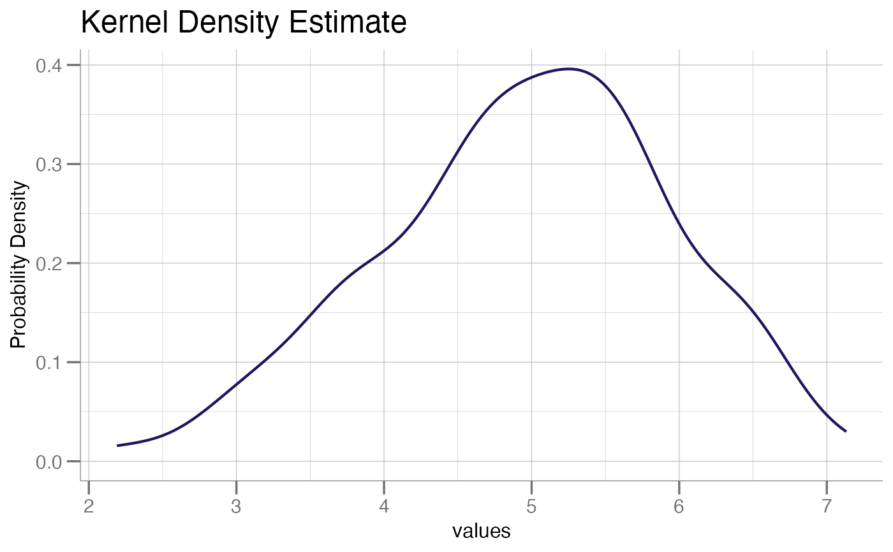
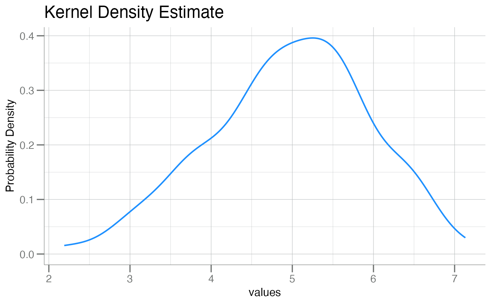
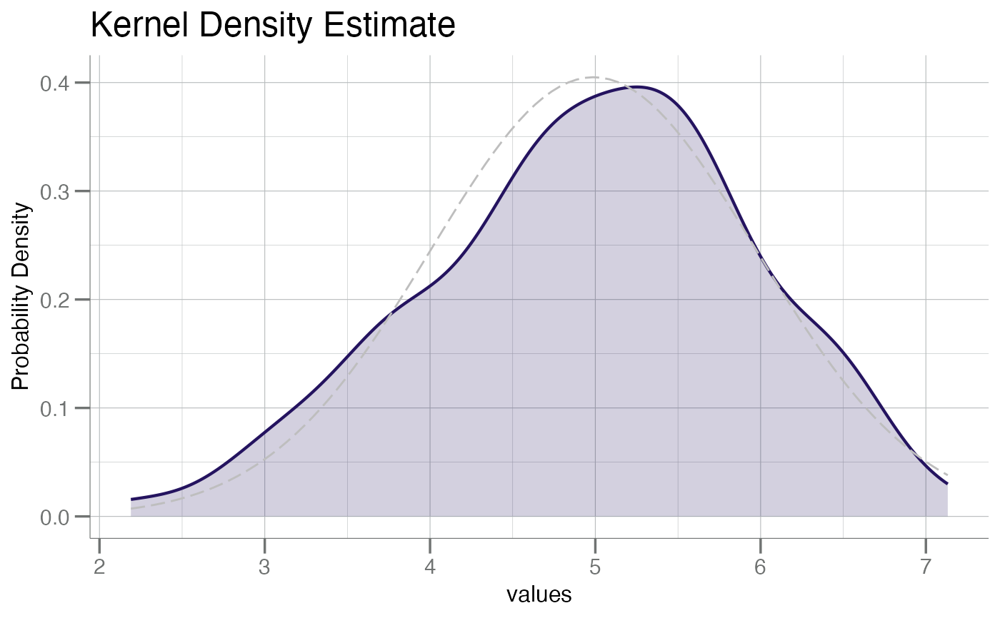
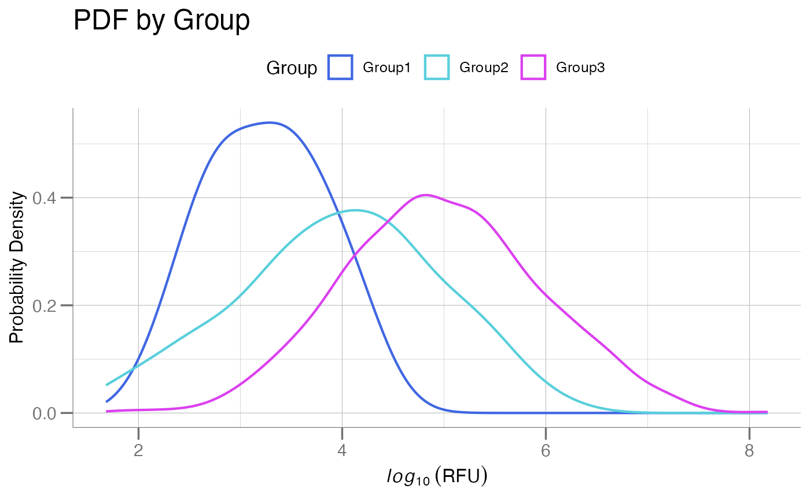
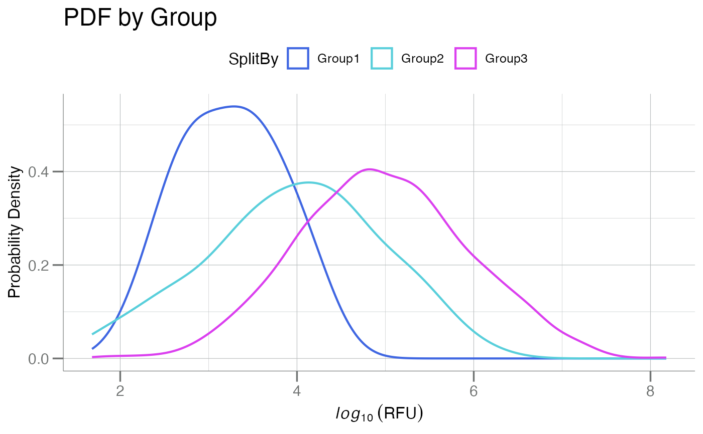
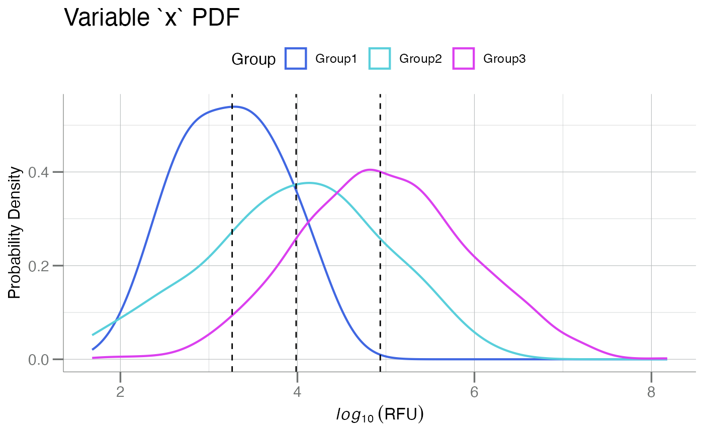
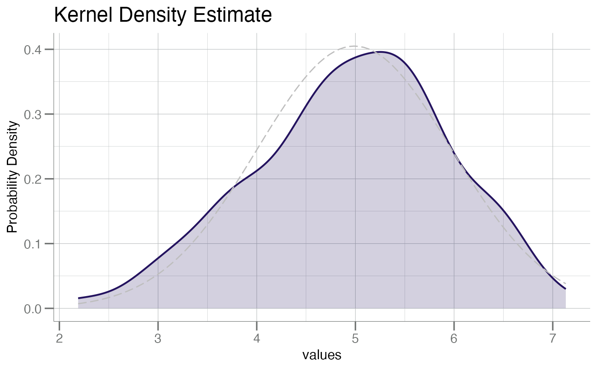
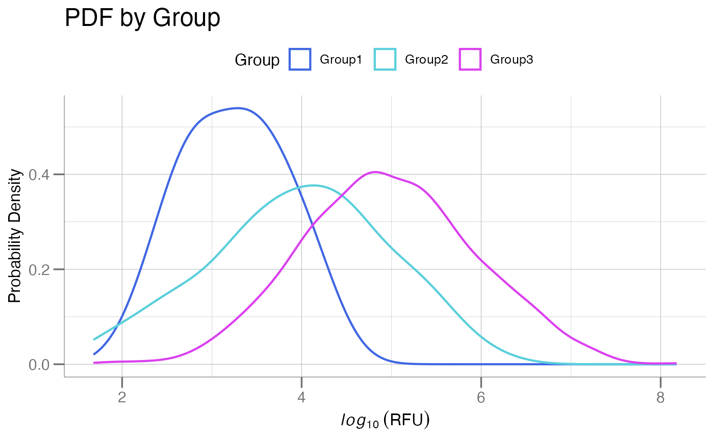
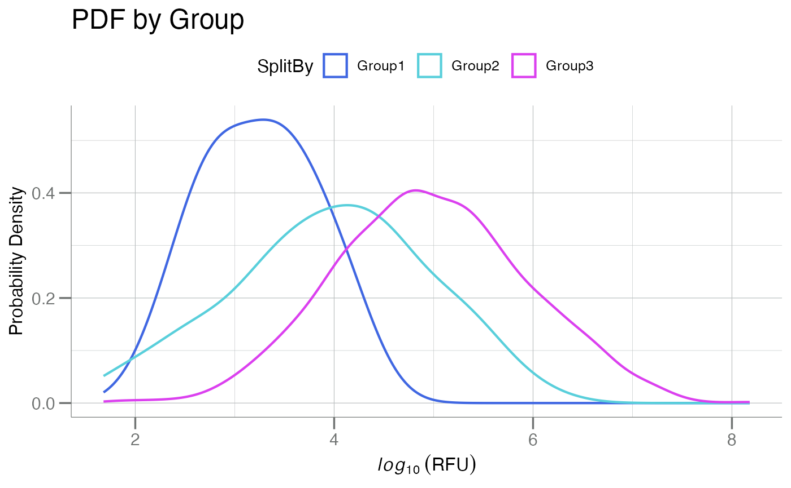
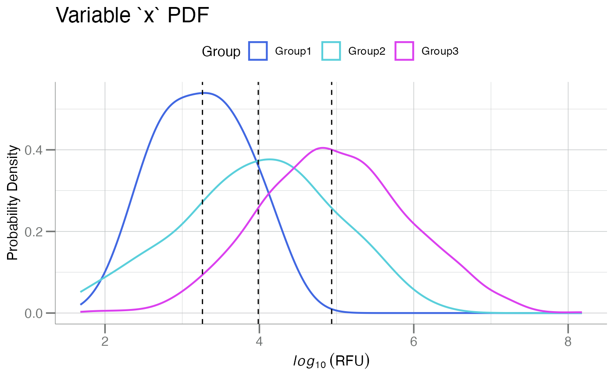

plotPDF() creates a plot of the smoothed kernel density
estimate of the probability density function (PDF) for a numeric
vector of continuous data.
plotPDFbyGroup() creates a plot with a series of smoothed
density estimates of the probability density function (PDF)
stratified/split by a grouping variable of (usually) meta data,
e.g. Response grouping.
plotPDFlist() creates a series of plots of the smoothed kernel density
estimates of the probability density function (PDF) from a numeric list
object.
Usage
plotPDF(
x,
col = soma_colors$purple,
x.lab = "values",
y.lab = "Probability Density",
main = "Kernel Density Estimate",
lty = "solid",
fill = FALSE,
add.gauss = FALSE
)
plotPDFbyGroup(
data,
apt,
group.var,
cols,
xlim = NULL,
x.lab = bquote(italic(log)[10] ~ (RFU)),
main = apt,
lty = "solid",
fill = FALSE,
ablines = NULL,
include.counts = FALSE
)
plotPDFlist(.data, label = "Group", main = "PDF by Group", ...)Arguments
- x
A numeric vector.
- col
Character. String for the color of the line.
- x.lab
Character. Optional string for the x-axis. Otherwise one is automatically generated (default).
- y.lab
Character. Optional string for the y-axis. Otherwise one is automatically generated (default).
- main
Character. Main title for the plot. See
ggtitle()forggplot2style graphics.- lty
Character. Passed to
geom_vline(). Seeggtitle().- fill
Logical. Should shaded colors beneath the curve be added?
- add.gauss
Logical. Should a Gaussian fit of the data be plotted with the PDF?
- data, .data
A
soma_adatordata.frameobject containing RFU data.- apt
Character. The name of a column in
datato use in generating CDFs. Typically an aptamer measurement.- group.var
An unquoted column name from
datacontaining group labels.- cols
Character. A vector of colors for the groups/boxes. For
plotDoubleHist(), must belength = 2.- xlim
Numeric. Limits for the x-axis. See
coord_cartesian().- ablines
Numeric. A vector of x-axis position(s) for vertical lines to be added to the CDF or PDF.
- include.counts
Logical. Should class counts be added to the plot legend?
- label
Character. A label for the grouping variable, i.e. what the entries of the list represent.
- ...
Additional arguments passed to either
plotCDFbyGroup()orplotPDFbyGroup(), primarily one of:x.labltycolsxlimfillablines
See also
geom_density()
Other cdf-pdf-plots:
plotCDF()
Examples
# `plotPDF()`
x <- rnorm(100, mean = 5)
plotPDF(x)

plotPDF(x, col = "dodgerblue")

plotPDF(x, add.gauss = TRUE)
 plotPDF(x, add.gauss = TRUE, fill = TRUE)

# `plotPDFbyGroup()`
data <- SomaDataIO::example_data |> dplyr::filter(SampleType == "Sample")
anno <- SomaDataIO::getTargetNames(SomaDataIO::getAnalyteInfo(data))
fsh <- "seq.3032.11"
title <- anno[[fsh]]
plotPDFbyGroup(log10(data), apt = fsh, group.var = Sex, main = title)
plotPDFbyGroup(log10(data), apt = fsh, group.var = Sex,
fill = TRUE, main = title)
lines <- split(log10(data[[fsh]]), data$Sex) |>
vapply(median, double(1))
plotPDFbyGroup(log10(data), apt = fsh, group.var = Sex,
fill = TRUE, ablines = lines, main = title)
# `plotPDFlist()`
x <- withr::with_seed(101,
mapply(mean = 3:5, n = c(10, 100, 1000), FUN = rnorm) |>
setNames(paste0("Group", 1:3))
)
lengths(x)
#> Group1 Group2 Group3
#> 10 100 1000
sapply(x, mean)
#> Group1 Group2 Group3
#> 3.245040 3.964522 4.969620
# warning: RFU values should all be positive!
plotPDFlist(x)

plotPDFlist(x, label = "SplitBy")

plotPDFlist(x, fill = TRUE)
plotPDFlist(x, x.lab = "My x-axis", main = "Variable `x` PDF")
medians <- vapply(x, median, 0.0)
plotPDFlist(x, ablines = medians, main = "Variable `x` PDF")

plotPDF(x, add.gauss = TRUE, fill = TRUE)

# `plotPDFbyGroup()`
data <- SomaDataIO::example_data |> dplyr::filter(SampleType == "Sample")
anno <- SomaDataIO::getTargetNames(SomaDataIO::getAnalyteInfo(data))
fsh <- "seq.3032.11"
title <- anno[[fsh]]
plotPDFbyGroup(log10(data), apt = fsh, group.var = Sex, main = title)
plotPDFbyGroup(log10(data), apt = fsh, group.var = Sex,
fill = TRUE, main = title)
lines <- split(log10(data[[fsh]]), data$Sex) |>
vapply(median, double(1))
plotPDFbyGroup(log10(data), apt = fsh, group.var = Sex,
fill = TRUE, ablines = lines, main = title)
# `plotPDFlist()`
x <- withr::with_seed(101,
mapply(mean = 3:5, n = c(10, 100, 1000), FUN = rnorm) |>
setNames(paste0("Group", 1:3))
)
lengths(x)
#> Group1 Group2 Group3
#> 10 100 1000
sapply(x, mean)
#> Group1 Group2 Group3
#> 3.245040 3.964522 4.969620
# warning: RFU values should all be positive!
plotPDFlist(x)

plotPDFlist(x, label = "SplitBy")

plotPDFlist(x, fill = TRUE)
plotPDFlist(x, x.lab = "My x-axis", main = "Variable `x` PDF")
medians <- vapply(x, median, 0.0)
plotPDFlist(x, ablines = medians, main = "Variable `x` PDF")
